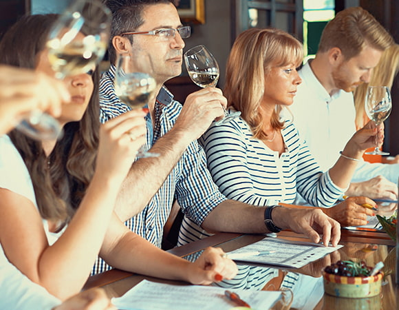

Club Œnologie d'Angers
Cours pour amateurs de vins
ACTUALITÉS DU MONDE DU VIN EN ANJOU
NOS FORMATIONS
| Module | Dates & Horaires | Contenu | Tarif |
|---|---|---|---|
| Cours d'initiation à la dégustation | 25 septembre 2026, 20h - 23h30 |
1 conférence + dégustation de 7 vins + le cours en pdf. Vous apprendrez à déguster les vins en utilisant votre sens visuel, olfactif et gustatif. Vous apprendrez également à mettre des mots sur un vin et à décrire ses arômes. La dégustation est ponctuée d'animations ludiques et est accompagnée de grignotages. |
35€ |
| Module d'oenologie | Octobre 2026 à Avril 2027 Vendredi 20h - 23h30 |
9 séances dont 7 cours + 1 visite de domaine + 1 repas accords-vins-mets. Thèmes saison 2026 - 2027 : Val de Loire : Sauvignon et Romorantin en Touraine, Vins rouge en Touraine, Chemin sec et son terroir de Calcaire, Chemin sec et son terroir de schiste. Vins d'Allemagne et Maladies des vins. |
145€ |
PRÉSENTATION DU CLUB
Vous habitez Angers et vous souhaitez suivre des cours d'oenologie ?
Le Club Oenologie d'Angers vous propose son programme annuel de formation.
Notre formule se distingue par son accessibilité financière, la rigueur de sa structure pédagogique et la grande qualité des intervenants professionnels, le tout au sein d'une atmosphère chaleureuse de club associatif.
-
Tout public Il s'adresse à tout public (un cours d'initiation à la dégustation qui ciblent les débutants).
-
Capacité du Club Cours Œnologie : 45 pers. Module Œnologie dédoublé : 2×45 pers. compte tenu des demandes.
-
Tarifs associatifs Les prix sont très accessibles.
-
Grande qualité Cours animés par des oenologues, des enseignants de lycées viticoles et des sommeliers.
-
Convivialité Professionnalisme et bonne humeur — l'ambiance chaleureuse d'un club associatif où il fait bon apprendre.
DÉTAIL DES MODULES :
-
Cours Initiation à la dégustation
Ce cours vous donnera les bases de la dégustation. Il est utile pour rejoindre le module d'oenologie.
-
Module d'œnologie
Ce module vous permettra à travers "7 cours + 1 visite de chai + 1 repas accords-vins-mets" de découvrir ou d'approfondir vos connaissances dans le domaine du vin.
Il est destiné à toute personne, quel que soit son niveau : débutant, amateur, confirmé.
En quelques années, vous allez acquérir les notions nécessaire pour "savoir parler du vin".
Nos adhérents restent en moyenne 7ans au club. Certains intègrent des groupes de dégustation, AOC, AOP, Guide Hachette ...
Le contenu des cours change tous les ans en respectant une logique de progression et les souhaits des adhérents.
Les thèmes suivants sont abordés :
- Les différents cépages, les terroirs, les régions viticoles françaises et étrangères
- Les terroirs
- Notions de viticulture, Notions de vinifications
- Les différents labels (HVE, Biodynamie, Terra Vitis ....)
- Les défauts des vins, les accords vins-mets
- La biologie du vin
ORGANISATION DES COURS
Les cours se déroulent dans le Local Associatif 14 Bd Jean Sauvage, Hauts de St Aubin, (proximité Centre de réadaptation Les Capucins et ligne du Tram) ou, parfois, chez des viticulteurs proches d'Angers.
Ils ont lieu le vendredi soir de 20h à 23h30 et d'Octobre à Mars.

Le Déroulement Typique d'une Séance
- → Étude d'un thème
-
→
Dégustation d'une appellation ou d'un cépage
L'appellation est soit en lien avec le thème du cours, soit proposée par les participants.
Les différentes étapes de la dégustation sont scrupuleusement respectées :
Analyse visuelle
Observer la robe, la limpidité et les reflets du vin.
Reconnaissance des saveurs et arômes
Identifier le nez (premier et deuxième nez) et les arômes.
Travail sur le vocabulaire associé
Acquérir les termes techniques pour décrire ses sensations.
Examen gustatif
Analyser l'attaque en bouche, l'équilibre, le corps et la longueur.
Accords mets et vins
Découvrir les harmonies et les alliances de saveurs.
La dégustation peut être précédée par des tests ludiques de reconnaissance d'arômes. Des outils spécifiques sont utilisés tels que les grilles de dégustation, verres INAO et des capsules d'arômes. Sept à neuf vins sont ainsi analysés pendant la séance. La dégustation est accompagnée par des en-cas préparés par les participants.
QUI SOMMES NOUS
Le Club Oenologie d'Angers
Il a été créé en 2001 par des passionnés et bons connaisseurs du monde viticole ligérien et avec la collaboration d'oenologues.
Les participants (95 en 2026) sont essentiellement originaires du département. L'age moyen est de 46 ans. Certains participants, après plusieurs années de formation, intègrent des groupes de dégustation professionnels.
Il a pour vocation première de proposer des formations animées par des professionnels. Le programme de formation est évolutif : en 6 années, l'essentiel des thèmes oenologiques sont abordés.
A l'origine, le club était adossé à l'association des Capucins
Documents
Le CLUB met à disposition des documents d'information et des fiches techniques.
Programme Saison 2024–2025
Télécharger le programmeProgramme Saison 2025–2026
Télécharger le programmeProgramme Saison 2026–2027
Télécharger le programmeFiche de Dégustation N°1
Méthodologie standardFiche de Dégustation N°2
Méthodologie avancéeAnalyse Sensorielle
Guide d'évaluationLes Principaux Cépages
Fiche de synthèseCarte des Arômes Richard Pfisher
Classification aromatiqueLa Roue des Arômes du Vin
Outil de dégustationContact
Une question, une inscription, une inscription « cadeau », laissez-nous un message, nous reviendrons vers vous rapidement.
(si vous avez un problème avec l'envoi de votre message sur cette page contact, nous vous invitons à nous contacter sur l'email du Club : oenocapucins@gmail.com)
A SAVOIR,
L'ensemble des formations commence en octobre. Le Club prend les pré-inscriptions dès décembre de l'année précédente.
Il n'est demandé aucun paiement à la pré-inscription (celui-ci se fait lors du premier cours ou quelques semaines avant, lors de "cadeau")
Nous reprenons contact avec le futur adhérent en septembre afin de valider son souhait et de procéder à l'inscription définitive.